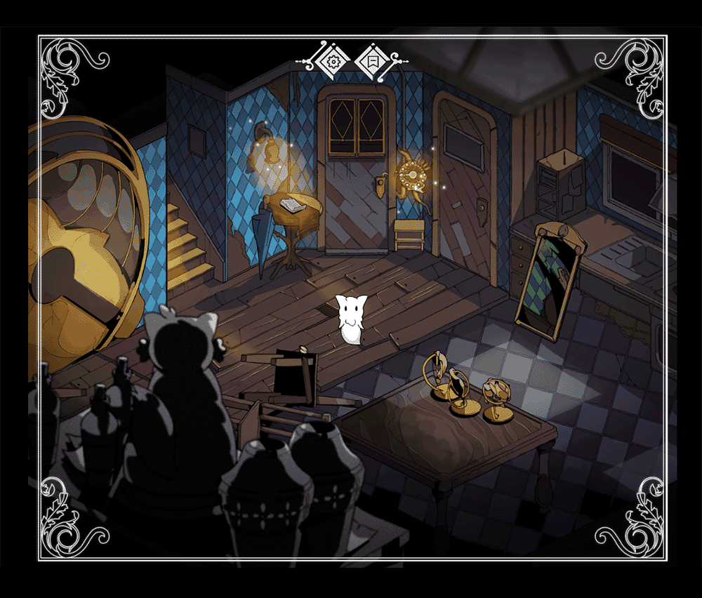
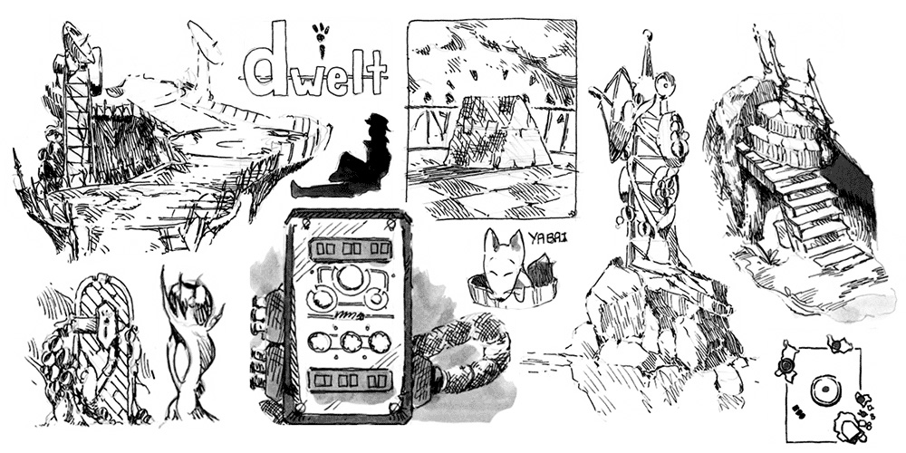
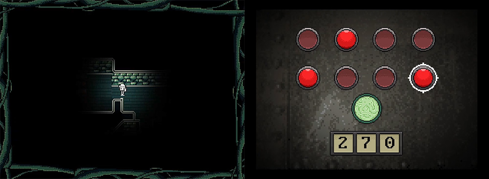
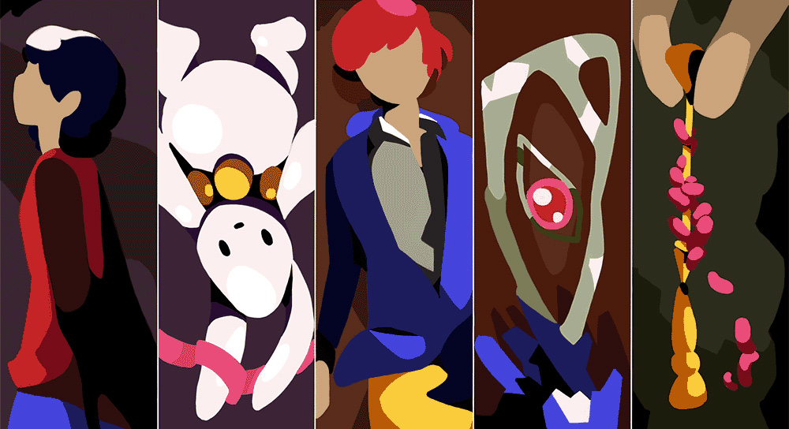
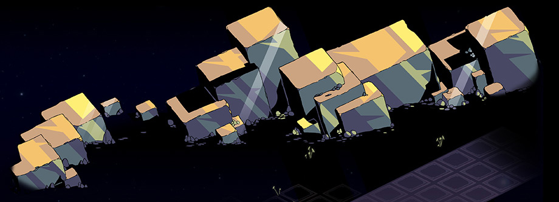

- Pitch and Specifications
- Dwelt: Let's Make a Game!
- But First: Root of All Love
- Scruffy Over and Over
- And Now...
Scruffy
The defining feature of Scruffy is that it doesn't exist, or else we wouldn't need to write about what it could be! It's like Grandpa's hobby model galleon languishing in the garage: talked about far more than it is worked on, its meaning encapsulated in the era of living and making that it represents rather than in the creation itself. But we hope that it's still worth talking about, and the dream of having it completed remains.
These were the notes from the original game pitch.
- Genre/key ideas: embedded puzzles; narrative driven adventure; psychological exploration; layered environment.
- Pitch: "eldritch nightmares beget eerie explorations in this succinct puzzle-solving narrative game. Join the young and precocious Aoibhe as, driven by motives kept close to her heart, she unlocks portals down to the deepest depths - and to a monster as old as humanity itself."
- Scope: concise - less than ten hours of gameplay. Six discrete environments with about two integrated puzzles in each.
Scruffy uses expository puzzle-solving mechanics to introduce compact yet detailed environments which depict 'emotional worlds' - projections of thoughts and feelings made manifest as rooms, structures, and geography. In doing so, we can explore the complex array of effects that harrowing or otherwise intense life events might have on the inner world of that recipient as we delve deeper into their mind. In this case, we are focusing on Aoi, a vivacious child who has internalized a lifetime of mistreatment at home. The game's core is built around the pillars of exploration and understanding, putting together disparate pieces which appear to be scattered in the real world and the mind-world, but which, in fact, are much more closely associated than might first be intuited.
Scruffy is a short, narrative-centric puzzle game which sits parallel to its sister game Dwelt. Where Dwelt is about a mother, Scruffy is about a child, but they both interrogate the same kind of ideas: grief, healing, and the expression of these feelings in architectural space. The style, typology, and even critical story elements of these games have changed dramatically over time, but this core has remained the same.
Dwelt: Let's Make a Game!
During school (early 2019) we were working on a "choose your own adventure" kind of book as an exploration of ideas about turning feelings into spaces, and we wondered if a video game might be a better medium for such things. Out of this the basis for Dwelt was slowly formed - with great difficulty, because we were simultaneously learning just how difficult games were to make! we settled on Godot, a choice we're really happy with to this day.
The idea behind Dwelt was that it would present the life of a young child as told by their mother, as if her memories were being paraded out of some psychological museum and presented to the viewer. These views would describe perfect times, free from flaw or error - but would twist and distort as this false thread, spun by grief, tangled and grew until confronted.
Heavily inspired by the slow atmosphere of Riven, we tried a number of styles and settings, from pixel art to heavily stylised point-and-click stills. But without any concrete plan for what the game was at a practical level (let alone how it might finish), it slowly just fizzled out.
We think about Dwelt often: the concept is quite personal to us and the vision we have for it still holds some intrigue: for instance, we remember wanting to have discreet film cameras around the set, Truman Show-style, and the permutations latent in the mixing of what is real and imagined, sensible and abstract. we always end up with mixed feelings about our music, but this particular one, "Osier", has endured for some reason.
But First: Root of All Love
Our art-oriented Call of Cthulhu server hosted a monster designing event a couple of years ago, which afforded the opportunity to make a short video game over a month! Having this time pressure was instrumental in getting anything done; a hard constraint like that really reigns in fantasies about adding inventories, multiplying characters, and the like. We made a game called Root of All Love, which featured a puzzle-locked basement which grows more and more unnerving until you finally reach the 'monster' at its center, a small, scared rabbit called... Scruffy.
The game really wasn't produced all that well, but it was a complete game - and we haven't been able to achieve that since. That was a time we really enjoyed, working under pressure to craft something to share with my friends: we're okay with the fact that it wasn't good because of how much we learned and how much fun was had.
Scruffy Over and Over
Scruffy emerged out of Root of all Love; we felt that the eponymous bunny had some unexplored potential, something which could possibly be unlocked by placing it in a richer and deeper environment - specifically, the vibes that Dwelt was supposed to convey. Starting was really easy, in fact; ideas just seemed to flow. We were still struggling with implementing things in Godot (programming is hard!) but Root had made the prospect of problem-solving more doable. We zoomed ahead to something like the image at the top of the page - and then hit a wall.
"What is Scruffy?" That was the big question. We had a room filled with secrets, machinery, and darkness, and a couple of puzzles whose logic had already been resolved. But why? There was this implemention, there was the overall pitch: and we saw a seemingly infinite void spanning the two. It took almost a year to get going again, but while we still couldn't come up with answers to those questions through our work, programming had become a whole lot easier in the meantime.
This next iteration was even more abstract than the last, Aoibhe's world and thoughts rendered with crystalline landscapes and dark, shimmering forests, hearkening back to the mysterious language of Dwelt. This young child had a whole place to explore, but again, no reason to do so save for the frightened rabbit at the end of the labyrinth.
And Now...
And this is where we're at now: with a framework of spaces that remain disjointed and disassociated, and a wide array of ideas and feelings that don't yet have a home to dwell in. Where does this leave Scruffy? We're really not sure. It feels impossible to finish, and yet the idea of letting go of the project seens unthinkable. But if it is to exist then it will need to be either extremely small and isolated or vast and "living", an expansive open world that grows and morphs as our - Aoibhe's - understanding of it grows and matures.
And should Scruffy even be a game? Is it better suited as, say, a book or a painting? An idea we played with more recently (going back to Icons) was to construct a whole room papered floor-to-ceiling with a milieu of art representing the wholeness of Aoibhe's space and struggle. This prospect certainly elicits excitement: we are so intrigued about how this space might feel, and how the lighting and sound could contribute toward communicating its story.
Well, whether we like it or not, Scruffy seems to be sticking around in our brain. It's hard not to be disappointed in how things have gone so far, but that spark of intrigue and devotion has remained all this time - and we can only hope that from it Aoibhe's flame will one day emerge!